A mobile shopping concept for a furniture retailer, with a small catalog, real product photos, and a checkout meant to take under a minute. This page explains the design choices and links to a clickable prototype.
Furniture costs a lot and is hard to judge on a phone, yet many furniture apps look like desktop catalogs squeezed onto a small screen. The grids are dense, the dimensions are unclear, you have to make an account before checkout, and you can't tell how a piece will look in your room.
NOOK keeps the catalog small, uses honest photos, shows the full price at every step, and asks only for what the purchase needs.
Every step a first-time buyer takes, from opening the app to placing an order. There are no dead ends or forced detours.
I worked out the structure in low-fidelity wireframes before any visual design: what goes above the fold, where the main button sits, and how much each screen asks of the shopper.
High-fidelity screens, in the order a shopper moves through them.
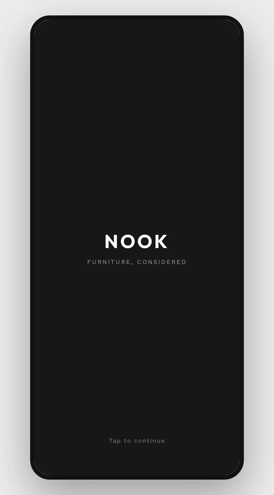
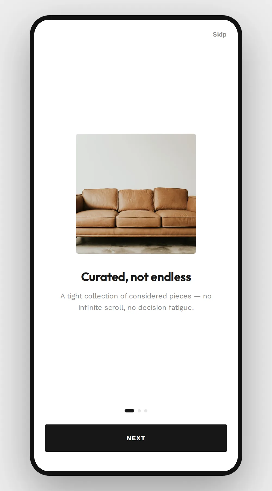
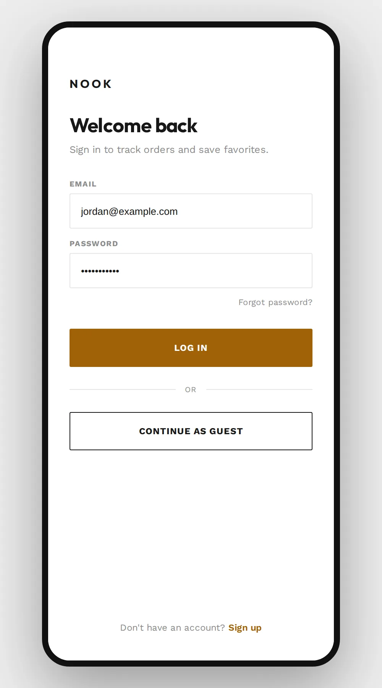
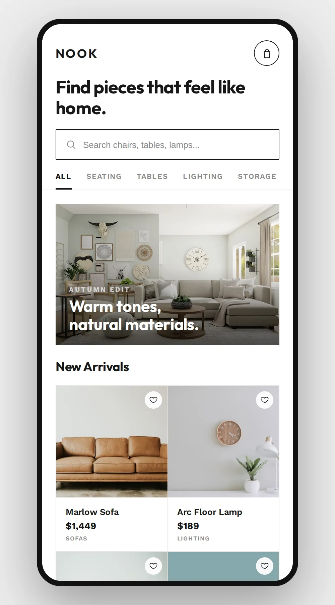
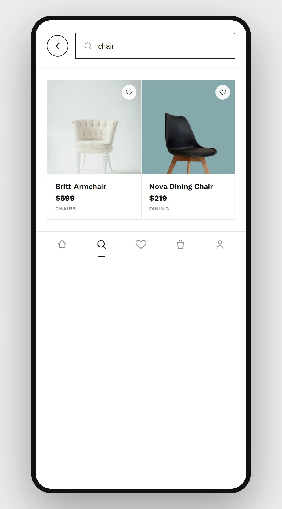
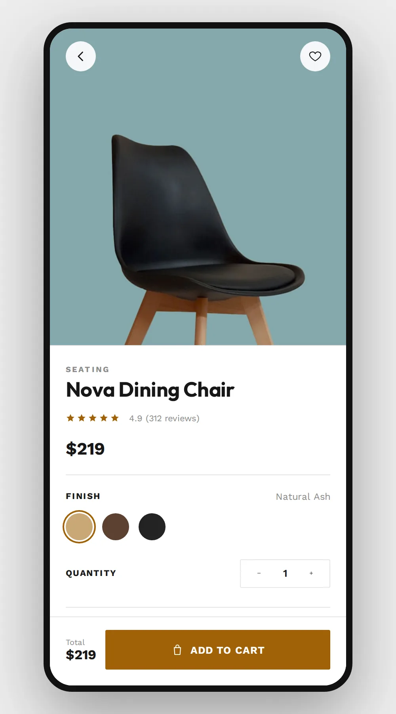
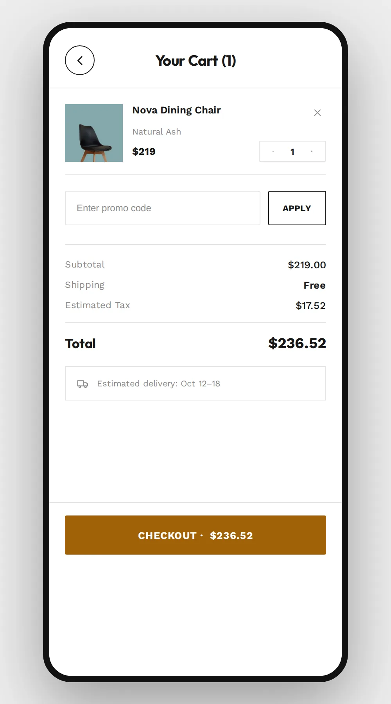
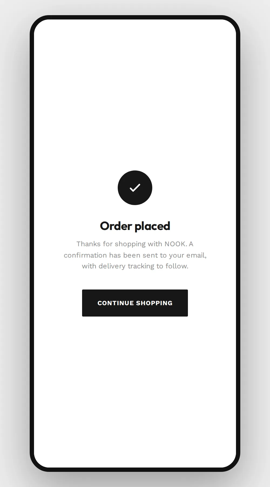
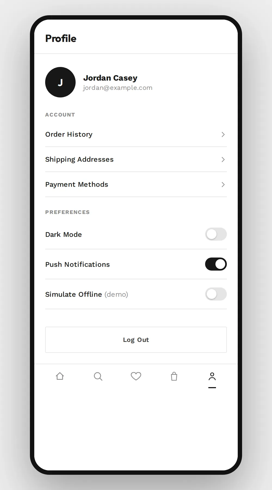
Every screen below is the working app shell, not linked images. Tap through it as a shopper would: browse, open a product, change its finish, add it to the cart, and check out.
Try tapping Nova Dining Chair in the grid. Each product opens its own detail page and adds its own line to the cart.
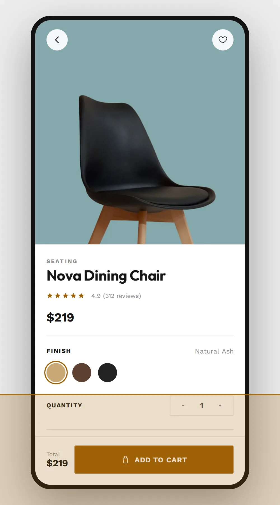
Design pitches often skip these states: an empty cart, a slow connection, a search with no matches. Each one has its own screen here.
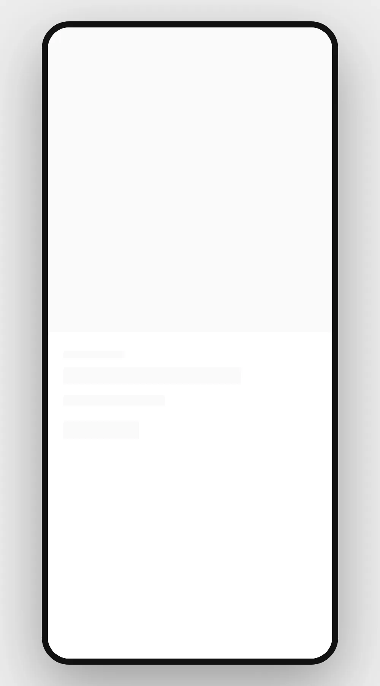
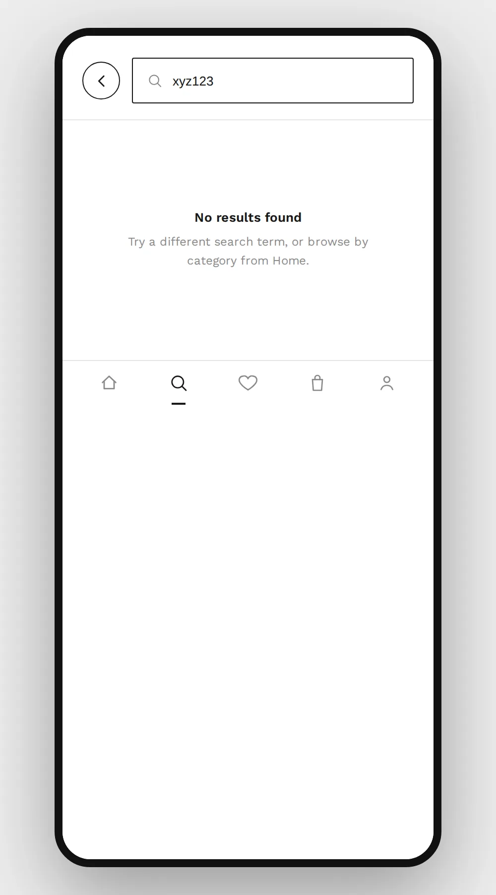
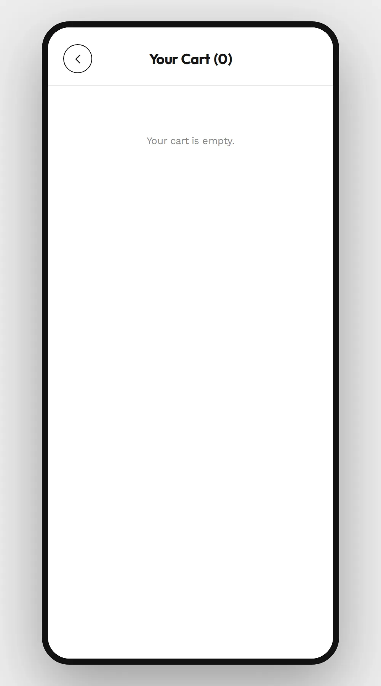
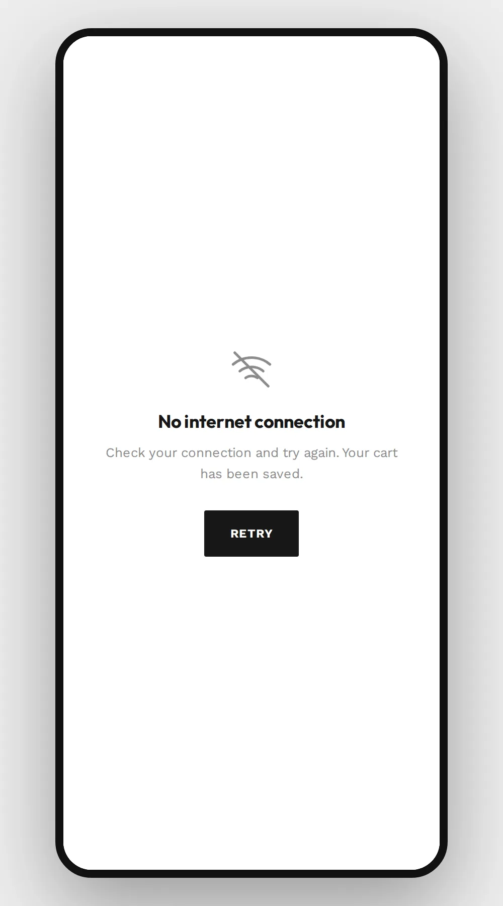
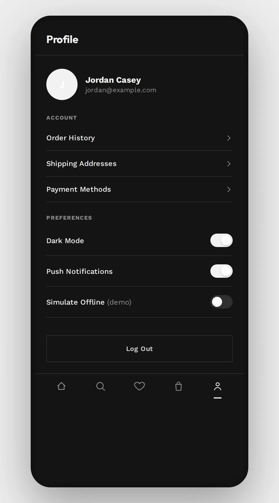
A small set of design tokens that every new screen reuses.
NOOK is a new concept, so there are no before-and-after numbers. Each choice below follows a common ecommerce checkout pattern.
Once the app is live, the plan is to measure each of these with real checkout data (see next steps).